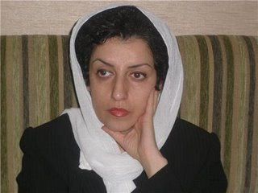

|
|
جایزه الکساندر لانگر 2009 برای نرگس محمدی
پنج شنبه10 اردیبهشت 1388

به گزارشسایت کمپین ایتالیا در یک کنفرانس مطبوعاتی در شهر بلزانو(ایتالیا) خبر جایزه بین المللی بنیاد الکساندر لانگر به نرگس محمدی اعلام شد.
کمیته علمی بنیاد الکساندر لانگر جایزه بین المللی سال 2009 خود را به نرگس محمدی از ایران خبر نگار, نایب رئیس
وسخنگوی کانون مدافعان حقوق بشر ورئیس هیئت اجرائی شورای صلح ایران اهدا می کند
بنیاد الکساندر لانگردر سال 1999 تاسیس شد و یک سازمان غیر دولتی می باشد که به مسائل اجتماعی و صلح توجه دارد و مرکز آن در شهر بلزانو(ایتالیا) است مراسم اهدای این جایزه در ماه جولای در حین فستیوال اروپا مدیترانه خواهد بود.
نرگس محمدی فعال حقوق بشر, متولد 1351 در زنجان فارغ التحصیل رشته فیزیک کاربردی از دانشگاه امام خمینی قزوین. در دوران دانشجوئی یکی از مؤسسین تشکل دانشجوئی روشنگران بودکه در زمان فعالیت در این تشکل ودر زمان برگزاری میتینگ های دانشجوئی دو بار باز داشت شد.
از سال 1375 کار روزنامه نگاری خود را در نشریه مستقل پیام هاجر را آغاز کردو مقالاتی در مورد زنان ومسائل دانشجوئی و حقوق بشر در نشریات مختلف به چاپ رساند.
درزمان دانشجوئی در هیئت های مختلف کوهنوردی سازمان دهنده و همکار برای صعود به بلند ترین قله های ایران بوده است که بعلت فعالیت های سیاسی مانع ورود او به گروههای کوهنوردی شده اند.
نایب رئیس کانون مدافعان حقوق بشر ورئیس کمیته زنان این کانون میباشد این کانون در سال 1379 در ایران تأسیس شد و عضو فدراسیون بین المللی حقوق بشر می باشد و ریاست آن بر عهده شیرین عبادی, برنده جایره صلح نوبل2003 است.
وی رئیس هیئت اجرائی شورای ملی صلح در ایران می باشد ,شورای ملی صلح در ایران در سال 1387 توسط 83 شخصیت اجتمائی-سیاسی-فرهنگی تأسیس شد و محور فعالیت آن صلح .وحقوق بشر است.
در سال 1378 با تقی رحمانی نویسنده , استاد دانشگاه و فعال سیاسی که 15 سال از عمر خود را در زندانهای جمهوری اسلامی گذرانده است, ازدواج میکند. اکنون صاحب دو فرز ند 5/2ساله می باشند.
نرگس محمدی در گفتگو با رادیو زمانه، مهمترین علت اهدای این جایزه را فعالیتهای حقوق بشری خود در ایران از دوران دانشجویاش عنوان کرد. خانم محمدی افزود که در نامهای که از سوی بنیاد لانگر برای وی ارسال شده، همچنین به سایر فعالیتهای مدنیاش که منجر به اهدای این جایزه شده نیز اشاراتی شده است.
خانم محمدی چندمین فعال مدنی زن ایرانی است که طی سالهای اخیر از سوی نهادها و بنیادهای بینالمللی برنده جایزه میشود.
پیش از وی، شیرین عبادی، نسرین ستوده، پروین اردلان و کمپین یک میلیون امضاء جوایز مشابه بینالمللی را به خاطر فعالیتهای مدنی خود دریافت کرده بودند.